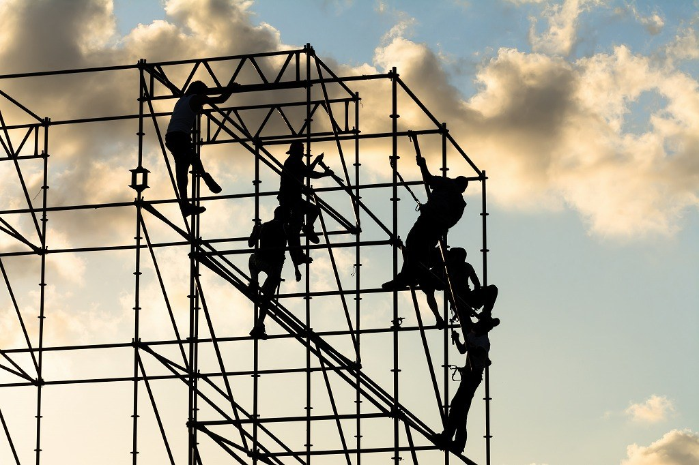

事業内容
一社で、足場から土木まで。
MORI工業は、足場工事（仮設工事一式）と土木工事一式を手がける会社です。戸建て住宅から高層ビル、商業施設や医療施設まで、新築・改修、民間・公共を問わず、関東7都県の現場に対応しています。
- トップ
- 事業内容
足場と土木を、一社で担うということ。
建設工事の現場では、工程ごとにさまざまな専門業者が関わります。足場は足場の業者、土木は土木の業者と、別々に手配するのが一般的です。しかしそのぶん、元請けの皆さまは業者ごとの連絡や日程の調整に、多くの時間と手間をかけることになります。
MORI工業は、足場工事と土木工事の両方を一社でお引き受けします。窓口がひとつになることで、業者の手配は一度で済み、工程の相談もまとめてできます。現場を知る職人どうしが同じ会社にいるからこそ、段取りの無駄を減らし、工期を守ることにもつながります。
また、私たちは一次下請けとして元請けの皆さまと直接やり取りすることがほとんどです。現場の状況や工程の変更をすぐに共有し、必要な人員と資材を素早く手配できる体制を整えています。小さな会社だからこそできる、身軽で小回りのきく対応を大切にしています。

足場工事（仮設工事一式）
建物の新築や改修、外壁塗装や大規模修繕など、あらゆる工事の土台になるのが足場です。MORI工業では、現場の確認から足場の計画、組立て、点検、解体までを一貫してお引き受けし、安全で作業しやすい足場をご提供します。
足場の良し悪しは、その上で働く職人の作業効率と安全を大きく左右します。私たちは、次に入る職人さんが動きやすいか、資材を置く場所は十分か、昇り降りはしやすいかまで考えて組み上げます。見えないところまで気を配ることが、良い足場の条件です。
戸建て住宅1棟の小さな現場から、マンションや高層ビル、商業施設などの大きな現場まで対応しています。新築・改修のどちらにも、また民間工事・公共工事のどちらにも対応できますので、まずはお気軽にご相談ください。
くさび緊結式足場
部材をハンマーで打ち込んで固定する足場です。組立て・解体が速く、戸建て住宅から中低層の建物まで幅広い現場で使われています。
枠組足場
門型の建枠を組み合わせる足場です。強度と安定性に優れ、中高層のビルやマンションなど、規模の大きな現場で多く採用されています。
単管足場
鋼管とクランプを組み合わせる足場です。形の自由度が高く、狭い場所や複雑な形の建物、部分的な補修工事などに向いています。
吊り足場
上部の構造物から吊り下げて設置する足場です。橋の下や高所の天井部分など、地面から足場を組めない場所での作業に用いられます。
※使用する足場の種類は、建物や現場の条件に合わせてご提案します。
対応する建物

土木工事一式
MORI工業は、足場工事とあわせて土木工事一式にも対応しています。建設工事の現場では、足場と土木の作業が近い時期に重なることも少なくありません。同じ会社でまとめてお引き受けできることが、私たちの大きな強みです。
民間工事はもちろん、公共工事の現場にも対応しています。新築・改修を問わず、工事の内容と規模をうかがったうえで、必要な人員と段取りをご提案します。現場の状況に合わせて、柔軟に対応できる体制を整えています。
土木工事だけのご依頼も承っています。足場とあわせたご依頼であれば、工程の調整がより簡単になり、元請けの皆さまの手間を大きく減らすことができます。現場のご相談は、まず代表まで直接お寄せください。
01
土木工事一式
土木工事一式をお引き受けしています。工事の内容と規模をうかがったうえで、必要な人員と段取りを組み立て、安全に工程を進めます。
02
民間・公共の両方に対応
民間工事だけでなく、公共工事の現場にも対応しています。工事の種類を問わず、関東7都県の現場からのご相談をお待ちしています。
03
足場との一括対応
足場工事とまとめてご依頼いただくことで、業者の手配と工程の調整が一度で済みます。窓口がひとつだから、連絡の手間も減らせます。
対応範囲
9種類の建物について、新築・改修のどちらの工事にも対応しています。民間工事・公共工事を問わずご相談いただけます。
| 建物の種類 | 新築 | 改修 |
|---|---|---|
| 戸建て | ||
| アパート | ||
| マンション | ||
| 低層ビル | ||
| 高層ビル | ||
| 小規模商業施設 | ||
| 大規模商業施設 | ||
| 教育施設 | ||
| 医療施設 |
表にない建物や、特殊な形状の現場についても、まずはご相談ください。現場の条件を確認したうえで、対応の可否と最適な足場の種類をご提案します。民間工事・公共工事のどちらにも対応しています。
施工の流れ
ご依頼から解体まで、6つのステップで進めます。どの段階でも、代表が直接ご相談に乗りますので、気になることがあればいつでもお声がけください。
STEP01
ご依頼
お電話かフォームから、現場の場所と建物の種類、ご希望の工期をお知らせください。図面がまだない段階でも大丈夫です。代表が直接お話をうかがい、次の段取りをご案内します。
STEP02
現場確認
実際に現場へうかがい、敷地の広さや周辺の状況、資材の搬入経路などを確認します。近隣の建物や道路との距離も見ながら、安全に組める足場の計画を立てていきます。
STEP03
お見積り
現場確認の内容をもとに、足場の種類や数量、工期をまとめたお見積りをお出しします。お見積りは無料です。内容にご納得いただいてから、正式にご依頼いただく流れです。
STEP04
組立
計画にもとづいて、足場を組み立てます。朝礼とKY活動で危険箇所を共有し、一本一本確実に組み上げていきます。必要に応じて、メッシュシートや防音シートで養生します。
STEP05
点検・引き渡し
組み上がった足場を点検し、手すりや作業床、昇降設備に問題がないかを確認したうえで引き渡します。工事期間中も定期的に点検し、安全な状態を保ちます。
STEP06
解体
工事が終わったら、足場を安全に解体して撤去します。資材を一本残らず片付け、現場をきれいな状態に戻して完了です。解体の日程も、工程に合わせて調整します。
安全への取り組み
足場は、そこで働くすべての職人の命を預かる仕事です。だからこそMORI工業は、安全をすべてに優先します。毎日の小さな積み重ねが、事故のない現場をつくると考えています。
朝礼とKY活動
毎朝の朝礼で、その日の作業内容と危険が潜んでいそうな場所をチーム全員で確認します。危険を事前に予測して共有することで、思わぬ事故を防ぎます。
毎日の点検
作業を始める前に、足場の手すりや作業床、クランプの締まり具合を点検します。安全帯や道具の状態もあわせて確認し、異常があればすぐに対処します。
資格者の配置
足場の組立てには、特別教育を修了した職人があたります。作業主任者の資格取得も会社として支援し、資格にもとづいた正しい手順で作業を進めます。
保険への加入
健康保険・厚生年金・労災保険・雇用保険の各種社会保険に加入しています。万が一のときにも、職人と元請けの皆さまが安心できる体制を整えています。
よくある質問
工事のご依頼について、よくいただく質問をまとめました。ここにない疑問も、お電話やフォームからお気軽にお問い合わせください。
まずはお電話でご相談ください。代表が直接お受けしているため、現場の場所や規模、ご希望の日程をうかがったうえで、その場で対応の可否と最短の日程をお伝えできます。できるかぎりご要望に沿えるよう調整します。
※回答はサンプルです
可能です。現場の住所と建物のおおよその大きさがわかれば、現地を確認したうえでお見積りをお出しします。現場の写真をお送りいただければ、概算の金額を先にお伝えすることもできます。
※回答はサンプルです
基本の対応エリアは関東7都県です。エリア外の現場については、工期や規模によってお受けできる場合もありますので、まずはお気軽にご相談ください。
※回答はサンプルです
もちろん大丈夫です。足場工事だけのご依頼も、戸建て1棟から大規模な現場まで承ります。必要に応じて、土木工事とあわせたご提案をすることもできます。
※回答はサンプルです
はい、土木工事一式のみのご依頼も承っています。工事の内容や規模をうかがったうえで、対応の可否と段取りをご提案します。足場とまとめてのご依頼も歓迎です。
※回答はサンプルです
はい。組み上げたあとも、工事期間中は定期的に足場を点検します。強風や大雨のあとには臨時の点検も行い、手すりや作業床、シートの状態を確認して、安全な状態を保ちます。
※回答はサンプルです
資材の搬入時間や作業の音には、できるかぎり配慮しています。住宅街や店舗が近い現場では、作業時間の調整や養生シートの設置など、現場ごとに必要な対策をご相談のうえで行います。
※回答はサンプルです
お見積りは無料です。現地の確認が必要な場合も、まずはお気軽にお声がけください。お見積りの内容にご納得いただいてから、正式にご依頼いただく流れです。
※回答はサンプルです

まずは、お気軽にご相談ください。
足場や土木工事のご依頼、求人へのご応募、協力業者としてのお取引まで、窓口はひとつです。内容がまだ固まっていなくても大丈夫です。お電話かフォームから、気軽に声をかけてください。